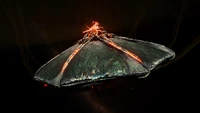

KNOW YOUR ENEMY
Thargoids comes in different types of ships. Interceptors and Scouts. Here's a brief explanation of them!
Thargoid Scouts
Thargoid scouts are little ships that usually serve as mere annoyance. However, this little ships could easily overwhelm any inexperienced AX pilot and could hinder greatly when dealing with their larger brothers, the interceptor.
There are currently 4 types of thargoid scouts
The Marauder
The Marauder is the most basic scout. It comes in groups and highly maneuverable. Taking it out will help in reducing the annoyance when interceptor arrives

The Berserker
The more aggressive variant of the marauder. Capable of releasing pulses that increase nearby scouts damage and ordering them to fire a barrage of caustic missles
The Regenerator
The regenerator, as it name implie, are capable to release pulses that heals nearby scout. Best taken out quickly lest they makes your day a little bit harder
The Inciter
The inciter buffs nearby scouts to have increased speed and maneuverability, making them hard to hit thus harder to kill.
Thargoid Interceptor
Thargoid interceptor are the main force of the thargoids and poses a serious threat to even the best AX pilots. What makes a thargoid interceptor different from the scouts is the ability to have a heart. A module special to interceptors that can heal it's damaged hulls and prevent damage taken after reaching a certain threshold. It also has thargon swarms. Small little drone-like ship that attacks independently and the main threat when dealing with interceptors. There are 4 main combat interceptors.
The Cyclops
The most common interceptor and a good start point when it comes to dealing with interceptors. It has the lowest amount of swarm and heart. Making it the easiest interceptor to fight. It shouldn't be underestimated though, unless you plan a quick, gruesomoe trip back to the rebuy screen.
The Basilisk
The fastest interceptor and a harder brother of the cyclops. Easily has enough speed to chase down even a speedy ship and highly maneuverable. Caution should be taken when dealing with the basilisk.
The Medusa
The Medusa is significantly harder and have even more hearts and thargon swarms. It is best to avoid fighting this variant until you could take down cyclops comfortably.
The Hydra
By far the hardest variant and a great challenge to even the best of the best AX pilot. Boasting overwhelmingly strong regeneration and hearts with swarm count reaching the third-digits. Unless you are ABSOLUTELY confident in fighting it, you better call some backup or run as fast as possible.